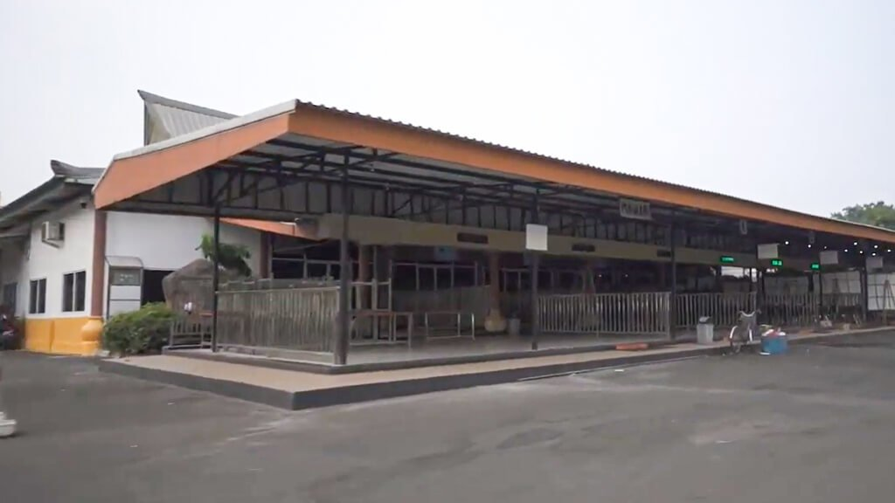

Pendampingan Duka Penuh Ketertiban & Empati
Rumah Duka Boen Tek Bio merupakan salah satu pilar pengabdian sosial utama dari Perkumpulan Keagamaan dan Sosial Boen Tek Bio. Didirikan untuk meringankan beban sanak keluarga yang berduka dengan pelayanan yang santun, tertib, dan transparan tanpa membedakan suku maupun agama.
📍 Lokasi Kompleks Rumah Duka:
Jl. Akses Tanah Gocap No. 102, Karawaci Ilir, Kota Tangerang, Banten 15113
📞 Kontak Hotline Langsung:
(021) 552-2434 | (021) 5576-9943 | (021) 5576-9944

Sarana Penunjang Kedukaan
Dirancang untuk memberikan ketenangan, privasi, dan kebersihan bagi keluarga besar serta para pelayat.
Ruang Persemayaman VIP
Ruang berpendingin udara (AC) kapasitas besar dengan area peristirahatan keluarga, sofa tamu, dan sound system upacara.
Ruang Standar
Ruangan tertata rapi, bersih, sirkulasi udara baik, serta penerangan memadai untuk persemayaman intim keluarga.
Ambulans Jenazah Siaga
Armada kendaraan jenazah siap 24 jam melayani penjemputan dari rumah sakit atau rumah duka menuju tempat pemakaman/kremasi.
Parkir Luas & Kantin
Area parkir gratis berkapasitas ratusan kendaraan, pos keamanan siaga 24 jam, serta fasilitas kantin konsumsi pelayat.
Alur Pelayanan Kedukaan
- Hubungi Hotline 24 Jam: Telepon ke nomor (021) 552-2434 atau (021) 5576-9943.
- Penjemputan Jenazah: Petugas ambulans diberangkatkan segera ke lokasi (rumah duka/rumah sakit).
- Pemilihan Ruang & Paket: Keluarga menentukan ruang persemayaman dan kebutuhan tata upacara pemakaman/kremasi.
- Pemulasaraan Jenazah: Proses pemandian, perapian busana, dan tata peti oleh petugas berpengalaman sesuai tradisi keluarga.
- Penyelenggaraan Persemayaman & Ibadah: Fasilitasi jadwal doa, kebaktian, atau sembahyang hingga hari keberangkatan menuju pemakaman atau krematorium.